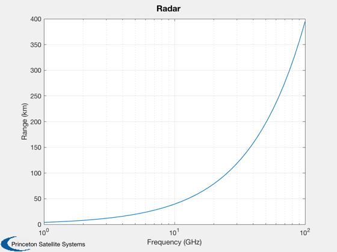
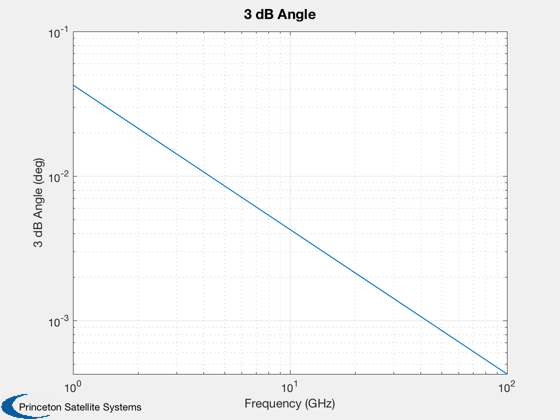
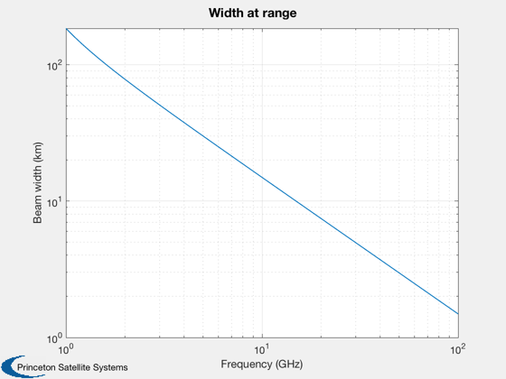

Design a radar
------------------------------------------------------------------------
See also Plot2D, TanD
------------------------------------------------------------------------
apertureDiameter = 0.57;
antennaArea = (pi/4)*apertureDiameter^2;
apertureEfficiency = 0.5;
aE = apertureEfficiency*antennaArea;
lengthEfficiency = sqrt(apertureEfficiency);
rangeResolution = .1;
bandwidth = 3e8/(2*rangeResolution);
k = 1.38e-23;
pT = 100;
lP = 1;
aT = 1;
lGP = 1;
lA = 1;
lS = 10^(1.4/10);
t0 = 290;
f = 10^(3.5/10);
sN = 10^(18/10);
lI = 10^(1.6/10);
nL = 2048;
b = bandwidth;
fprintf('Required bandwidth \t %12.4f \tGHz\n',bandwidth/1e9)
fprintf('Required range resolution \t %12.4f \tm\n',rangeResolution)
fprintf('Aperture efficiency \t %12.4f \t \n',apertureEfficiency)
fprintf('Range efficiency \t %12.4f \t \n',lengthEfficiency)
fprintf('Required range resolution \t %12.4f \tm\n',rangeResolution)
fprintf('Required S/N \t %12.4f\t \n',sN)
fprintf('Transmitted power \t %12.4f \tW\n',pT)
fprintf('Antenna area \t %12.4f \tm^2\n',aE)
fprintf('Target area \t %12.4f\t m^2\n',aT)
fprintf('Propagation loss \t %12.4f\t \n',lA);
fprintf('Ground plane loss \t %12.4f\t \n',lGP);
fprintf('System loss \t %12.4f\t \n',lS);
fprintf('Integration loss \t %12.4f\t \n',lI);
fprintf('Number of hits processed \t %12.4f\t \n',nL);
fprintf('Noise factor \t %12.4f\t \n',f);
fHz = logspace(9,11);
c = 3e8;
lambda = c./fHz;
sigma = 4*pi*aT./lambda.^2;
gP = nL/lI;
z = pT*aE^2*sigma*gP./(lambda.^2*4*pi*k*t0*b*f*lS*lA*lGP);
r = (z/sN).^(0.25);
theta3dB = (180/pi)*lambda/(lengthEfficiency*apertureDiameter);
Plot2D(fHz/1e9,r/1000, 'Frequency (GHz)','Range (km)','Radar', 'xlog')
Plot2D(fHz/1e9,theta3dB/1000, 'Frequency (GHz)','3 dB Angle (deg)','3 dB Angle', 'log')
Plot2D(fHz/1e9,2*TanD(theta3dB)*100,'Frequency (GHz)','Beam width (km)','Width at range', 'log')
Required bandwidth 1.5000 GHz
Required range resolution 0.1000 m
Aperture efficiency 0.5000
Range efficiency 0.7071
Required range resolution 0.1000 m
Required S/N 63.0957
Transmitted power 100.0000 W
Antenna area 0.1276 m^2
Target area 1.0000 m^2
Propagation loss 1.0000
Ground plane loss 1.0000
System loss 1.3804
Integration loss 1.4454
Number of hits processed 2048.0000
Noise factor 2.2387
  